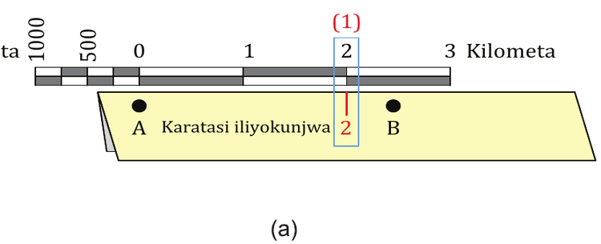
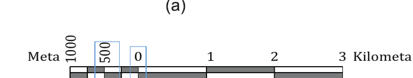

Iwapo kituo B kipo katikati ya namba mbili za kwenye skeli ya mstari, weka alama na andika namba ya kushoto mwa kituo B kwenye karatasi iliyokunjwa kama inavyowasilishwa kwa wino mwekundu katika Kielelezo namba 7(a). Kisha, hamisha kipande cha karatasi kuelekea kushoto sambamba na skeli ya mstari kwa kuoanisha kituo B na sifuri, (0) (alama nyekundu itakuwa upande wa kushoto wa skeli ya mstari). Chunguza namba kwenye skeli ya mstari iliyokaribu na alama nyekundu, kisha inakili kama inavyowasilishwa katika Kielelezo namba 7(b). Katika Kielelezo 7(a), namba iliyo kushoto ni 2 na kipimo chake ni kilometa, pia katika kielelezo 7(b), namba iliyo karibu na alama nyekundu kwenye skeli ya mstari ni 500 na kipimo chake ni meta. Hivyo, umbali halisi wa ardhi kati ya kituo A na B ni kilometa 2 na meta 500.

(a)

(b)